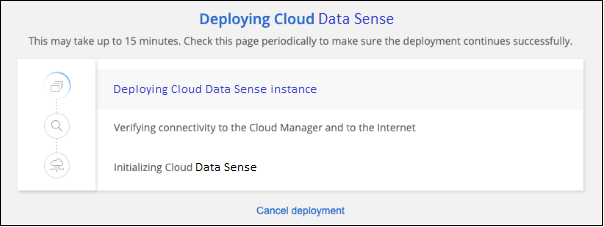

문서 변경 요청
문서 변경 요청 이 페이지 편집
이 페이지 편집 기여하는 방법 자세히 알아보기
기여하는 방법 자세히 알아보기클라우드 데이터 센스를 클라우드에 배포합니다
클라우드 데이터 센스를 클라우드에 구축하려면 몇 단계를 완료하십시오.
참고: 또한 이 기능을 사용할 수 있습니다 "인터넷에 액세스할 수 있는 Linux 호스트에 데이터 센스를 배포합니다". 온프레미스에도 있는 데이터 감지 인스턴스를 사용하여 사내 ONTAP 시스템을 스캔하려는 경우 설치 유형이 좋은 옵션이 될 수 있지만 이는 필수 사항이 아닙니다. 선택한 설치 방법에 관계없이 소프트웨어가 정확히 같은 방식으로 작동합니다.
빠른 시작
다음 단계를 따라 빠르게 시작하거나 나머지 섹션을 아래로 스크롤하여 자세한 내용을 확인하십시오.
아직 커넥터가 없으면 지금 연결선을 작성합니다. 을 참조하십시오 "AWS에서 커넥터 생성", "Azure에서 커넥터 만들기", 또는 "GCP에서 커넥터를 생성하는 중입니다".
또한 가능합니다 "Connector를 온-프레미스에 배포합니다" 네트워크 또는 클라우드의 Linux 호스트
환경이 필수 조건을 충족할 수 있는지 확인합니다. 여기에는 인스턴스에 대한 아웃바운드 인터넷 액세스, 포트 443을 통한 커넥터와 클라우드 데이터 감지 간의 연결 등이 포함됩니다. 전체 목록을 참조하십시오.
기본 구성에는 Cloud Data Sense 인스턴스에 대해 16개의 vCPU가 필요합니다. 을 참조하십시오 "인스턴스 유형에 대한 자세한 내용".
설치 마법사를 시작하여 클라우드에 Cloud Data Sense 인스턴스를 구축합니다.
Cloud Manager에서 Cloud Data Sense를 통해 스캔하는 첫 번째 1TB의 데이터는 무료입니다. 해당 시점 이후에도 데이터를 계속 스캔하려면 클라우드 공급자 마켓플레이스 또는 NetApp의 BYOL 라이센스를 통한 Cloud Manager 가입이 필요합니다.
커넥터를 작성합니다
Connector가 없는 경우 클라우드 공급자에 Connector를 생성합니다. 을 참조하십시오 "AWS에서 커넥터 생성" 또는 "Azure에서 커넥터 만들기", 또는 "GCP에서 커넥터를 생성하는 중입니다". 대부분의 경우, 대부분의 경우 Cloud Data Sense를 활성화하려고 시도하기 전에 Connector를 설정했을 것입니다 "Cloud Manager 기능에는 커넥터가 필요합니다"하지만 지금 설정해야 하는 경우도 있습니다.
특정 클라우드 공급자에 배포된 Connector를 사용해야 하는 몇 가지 시나리오가 있습니다.
-
AWS의 Cloud Volumes ONTAP, ONTAP용 Amazon FSx 또는 AWS S3 버킷에서 데이터를 스캔할 때는 AWS의 커넥터를 사용합니다.
-
Azure 또는 Azure NetApp Files의 Cloud Volumes ONTAP에서 데이터를 스캔할 때 Azure의 커넥터를 사용합니다.
-
GCP의 Cloud Volumes ONTAP에서 데이터를 스캔할 때 GCP의 커넥터를 사용합니다.
온프레미스 ONTAP 시스템, 타사 파일 공유, 범용 S3 오브젝트 스토리지, 데이터베이스, OneDrive 폴더, SharePoint 계정을 이러한 클라우드 커넥터를 사용할 때 스캔할 수 있습니다.
참고: 또한 이 기능을 사용할 수 있습니다 "Connector를 온-프레미스에 배포합니다" 네트워크 또는 클라우드의 Linux 호스트 데이터 센스를 사내에서 설치하려는 일부 사용자는 Connector를 온프레미스에 설치하도록 선택할 수도 있습니다.
보시다시피 을 사용해야 하는 몇 가지 상황이 있을 수 있습니다 "다중 커넥터".

|
Azure NetApp Files 볼륨을 스캔할 계획이라면 스캔할 볼륨과 동일한 영역에 를 배포해야 합니다. |
사전 요구 사항을 검토합니다
클라우드 데이터 센스를 클라우드에 구축하기 전에 다음 사전 요구 사항을 검토하여 지원되는 구성이 있는지 확인하십시오.
- 클라우드 데이터 센스에서 아웃바운드 인터넷 액세스를 활성화합니다
-
클라우드 데이터 센스를 사용하려면 아웃바운드 인터넷 액세스가 필요합니다. 가상 또는 물리적 네트워크에서 인터넷 액세스에 프록시 서버를 사용하는 경우 데이터 감지 인스턴스에 다음 엔드포인트에 연결할 수 있는 아웃바운드 인터넷 액세스가 있는지 확인하십시오. 클라우드에 Data Sense를 구축하면 Connector와 동일한 서브넷에 위치합니다.
AWS, Azure 또는 GCP에서 Cloud Data Sense를 구현하는지 여부에 따라 아래에서 적절한 표를 검토하십시오.
-
AWS 구축에 필요한 엔드포인트: *
엔드포인트 목적 https://cloudmanager.cloud.netapp.com 으로 문의하십시오
NetApp 계정을 포함한 Cloud Manager 서비스와 통신합니다.
https://netapp-cloud-account.auth0.com https://auth0.com 으로 문의하십시오
NetApp Cloud Central과 통신하여 중앙 집중식 사용자 인증 제공
소프트웨어 이미지, 매니페스트 및 템플릿에 대한 액세스를 제공합니다.
https://kinesis.us-east-1.amazonaws.com 으로 문의하십시오
NetApp에서 감사 레코드의 데이터를 스트리밍할 수 있습니다.
Cloud Data Sense를 통해 매니페스트와 템플릿을 액세스 및 다운로드하고 로그 및 메트릭을 전송할 수 있습니다.
-
Azure 및 GCP 구축에 필요한 엔드포인트: *
엔드포인트 목적 https://cloudmanager.cloud.netapp.com 으로 문의하십시오
NetApp 계정을 포함한 Cloud Manager 서비스와 통신합니다.
https://netapp-cloud-account.auth0.com https://auth0.com 으로 문의하십시오
NetApp Cloud Central과 통신하여 중앙 집중식 사용자 인증 제공
소프트웨어 이미지, 매니페스트, 템플릿에 액세스하고 로그 및 메트릭을 보낼 수 있습니다.
https://support.compliance.cloudmanager.cloud.netapp.com/ 으로 문의하십시오
NetApp에서 감사 레코드의 데이터를 스트리밍할 수 있습니다.
-
- Cloud Manager에 필요한 권한이 있는지 확인합니다
-
Cloud Manager에 리소스를 구축하고 Cloud Data Sense 인스턴스에 대한 보안 그룹을 생성할 수 있는 권한이 있는지 확인합니다. 에서 최신 Cloud Manager 사용 권한을 찾을 수 있습니다 "NetApp에서 제공하는 정책".
- vCPU 한도를 확인하십시오
-
클라우드 공급자의 vCPU 제한으로 16개 코어가 있는 인스턴스를 구축할 수 있는지 확인합니다. Cloud Manager가 실행 중인 지역의 관련 인스턴스 제품군에 대한 vCPU 제한을 확인해야 합니다. "필요한 인스턴스 유형을 참조하십시오".
vCPU 제한에 대한 자세한 내용은 다음 링크를 참조하십시오.
-
CPU가 적고 RAM이 적은 시스템에 데이터 센스를 배포할 수 있지만 이러한 시스템을 사용할 때는 한계가 있습니다. 을 참조하십시오 "더 작은 인스턴스 유형 사용" 를 참조하십시오.
- Cloud Manager Connector가 클라우드 데이터 센스에 액세스할 수 있는지 확인합니다
-
Connector와 Cloud Data Sense 인스턴스 간의 연결을 확인합니다. Connector의 보안 그룹은 포트 443을 통해 데이터 감지 인스턴스 간에 인바운드 및 아웃바운드 트래픽을 허용해야 합니다. 이 연결을 통해 Data Sense 인스턴스를 구축할 수 있으며 규정 준수 및 거버넌스 탭에서 정보를 볼 수 있습니다. Cloud Data Sense는 AWS 및 Azure의 정부 지역에서 지원됩니다.
AWS 및 AWS GovCloud 배포에는 추가 인바운드 및 아웃바운드 규칙이 필요합니다. 을 참조하십시오 "AWS의 커넥터 규칙" 를 참조하십시오.
Azure 및 Azure Government 배포에는 추가 인바운드 및 아웃바운드 규칙이 필요합니다. 을 참조하십시오 "Azure의 커넥터 규칙" 를 참조하십시오.
- 클라우드 데이터 센스를 계속 운영할 수 있는지 확인하십시오
-
데이터를 지속적으로 스캔하려면 Cloud Data Sense 인스턴스가 켜져 있어야 합니다.
- 클라우드 데이터 센스에 대한 웹 브라우저 연결을 확인합니다
-
Cloud Data Sense를 사용하도록 설정한 후에는 사용자가 Data Sense 인스턴스에 연결된 호스트에서 Cloud Manager 인터페이스에 액세스해야 합니다.
Data Sense 인스턴스는 개인 IP 주소를 사용하여 인덱싱된 데이터에 인터넷에서 액세스할 수 없도록 합니다. 따라서 Cloud Manager에 액세스하는 데 사용하는 웹 브라우저에는 해당 프라이빗 IP 주소에 연결되어 있어야 합니다. 이러한 연결은 클라우드 공급자(예: VPN)에 직접 연결되거나 데이터 감지 인스턴스와 동일한 네트워크 내에 있는 호스트에서 발생할 수 있습니다.
클라우드에 데이터 센스를 구축하십시오
다음 단계에 따라 클라우드 데이터 센스의 인스턴스를 클라우드에 배포합니다.
-
Cloud Manager에서 * 데이터 감지 * 를 클릭합니다.
-
Activate Data Sense * 를 클릭합니다.

-
클라우드 배포 마법사를 시작하려면 * Activate Data Sense * 를 클릭합니다.

-
구축 단계를 진행할 때 마법사가 진행률을 표시합니다. 문제가 발생할 경우 중지하고 입력을 요청합니다.

-
인스턴스가 배포되면 * Continue to configuration * 을 클릭하여 _Configuration_페이지로 이동합니다.
Cloud Manager는 클라우드 공급업체에 Cloud Data Sense 인스턴스를 구축합니다.
구성 페이지에서 스캔할 데이터 원본을 선택할 수 있습니다.
또한 가능합니다 "클라우드 데이터 센스에 대한 라이센스 설정" 현재. 데이터 양이 1TB를 초과할 때까지 비용이 청구되지 않습니다.